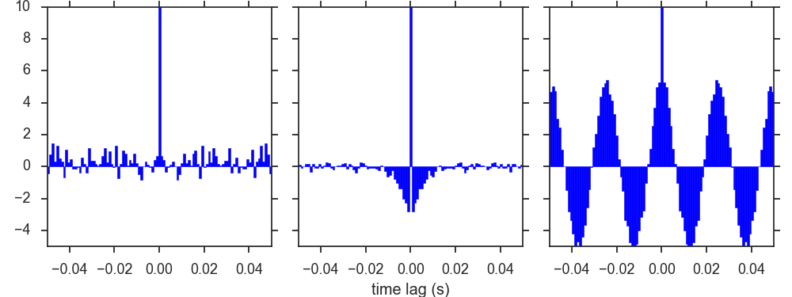

Compute autocorrelation histograms of spike trains generated by a Poisson generator with a constant firing rate of 100 Hz, a constant firing rate of 100 Hz together with a refractory period modeled as in exercise 2 with \(\tau_{\text{ref}}=10\,\text{ms}\), and a variable firing rate \(r(t)=100(1+\cos(2\pi t /25 \text{ms}))\, \text{Hz}\). Plot the histograms over a range from 0 to 100 ms.
We have to compute the autocorrelogram, defined as
angle brackets denoting averages over realizations. To this end, we will define a function that takes an array of spike times as an argument and gives a histogram (i.e., a sequence of relative frequencies) as output. This histogram will give "the number of times that any two spikes are separated by a time interval between \((m-0.5) \Delta t\) and \((m+0.5) \Delta t\)" (Dayan & Abbott 2001), where \(m\) is an integer and \(\Delta t\) is the width of each bin.
# We assume numpy is loaded as np already def autocorrelation(spike_times, bin_width=5e-3, width=1e-1, T=None): """Given the spike train 'spike_times' return the autocorrelation histogram, as well as the bin edges (including the rightmost one). """ d = [] # distance between any two spike times n_sp = np.alen(spike_times) # number of spikes i, j = 0, 0 for t in spike_times: # Consider only time distances lower than width. # Find the relevant lower index... while i < n_sp and spike_times[i] < t - width: i += 1 # ...and the relevant upper index while j < n_sp and spike_times[j] < t + width: j += 1 # Feed the list d.extend(spike_times[i:j] - t) n_edges = 2 * int(np.floor(width / bin_width)) # n. of bins is n_edges-1 b = np.linspace(-width, width, n_edges, endpoint=True) # bin edges H = np.histogram(d, bins=b)[0] # Total duration if T is None: T = spike_times.max() - spike_times.min() # True for T >> 1/r # Correct boundary effects W = T - bin_width * np.abs(np.arange(n_edges / 2 - 1, -n_edges / 2, -1)) return (H / W - n_sp**2 * bin_width / (T**2), b)
The first two spike trains, one purely homogeneous and the other homogeneous with refractoriness, were generated in exercise 2 with names sp_times_max and sp_times, respectively. We generate now a third spike train with oscillating instantaneous firing rate applying the rejection sample method of exercise 2. The following code assumes that the variables defined in exercise 2 are still in the workspace.
r_max = 200 T = 50 isi_max = -np.log(np.random.rand(r_max * T) ) / r_max sp_times_max = np.cumsum(isi_max) x = np.random.rand(len(sp_times_max)) sp_times_osc = [] for i, t in enumerate(sp_times_max): z = 100 * (1 + np.cos(2 * np.pi * t / 0.025)) / r_max y = x[i] if (z > y): sp_times_osc.append(sp_times_max[i]) else: continue sp_times_osc = np.array(sp_times_osc)
We can now compute and plot the autocorrelogram for each spike train. We use a bin width of 1 ms and consider a maximal time lag of 50 ms.
# import matplotlib.pyplot as plot # if you haven't done that yet AC = [] AC.append(autocorrelation(sp_times_max, bin_width=1e-3, width=5e-2)) AC.append(autocorrelation(sp_times_ref, bin_width=1e-3, width=5e-2)) AC.append(autocorrelation(sp_times_osc, bin_width=1e-3, width=5e-2)) for i in [1, 2, 3]: plt.subplot(1, 3, i) plt.bar(AC[i-1][1][:-1], AC[i-1][0], width=np.diff(AC[i-1][1])[0], edgecolor='b', fc='b') plt.xlim((-0.05, 0.05)) plt.ylim((-5.0, 10.0)) if i > 1: plt.setp(plt.gca(), 'yticklabels', []) if i == 2: plt.xlabel("time lag (s)")
Here we have called function bar to plot the histograms manually from the bins and values returned by autocorrelation (we could have called hist instead)
